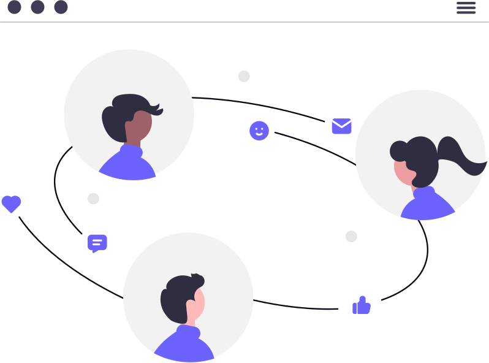

History of TechCon
Born out of necessity during one of the most challenging periods in recent history, TechCon began its journey in 2019. As the world grappled with the COVID-19 pandemic, face-to-face interactions became nearly impossible, yet the need for collaboration in the tech space only intensified. Amidst lockdowns and global uncertainty, TechCon emerged as a virtual beacon—bringing together developers, thinkers, and innovators to tackle the rapidly evolving challenges of the digital age.

The inaugural conference provided a fully online platform where software developers from across the globe could exchange ideas, build tools, and propose solutions—all from the safety of their homes. It was more than just a workaround; it was a revolutionary way to unify the developer community in a time of crisis.
As the world transitioned out of the pandemic, TechCon evolved with it. From 2022 onwards, the conference reintroduced physical meetups while maintaining its global reach through hybrid experiences. These in-person events have since sparked deeper collaboration, richer experiences, and the birth of visionary projects.

One such innovation is GradForce—a powerful solution for university graduates that combines entrepreneurial training, internship matching, and job-readiness programs, including immersive virtual interview simulators. Launched after TechCon 2023, GradForce has empowered countless graduates to confidently step into the workforce.
With successful editions in 2022, 2023, and 2024, TechCon has grown into a movement—bridging gaps, solving real-world problems, and setting the pace for the future of tech. As we look to 2025, the mission remains unchanged: connect, create, and catalyze change through code.
Our Mission
At TechCon, our mission is simple yet powerful: to harness the collective brilliance of the developer community to shape meaningful solutions for a rapidly changing world.
What began as a digital lifeline during the global pandemic has grown into a thriving platform that empowers developers to go beyond the code—fostering innovation, driving impact, and building resilient systems that meet the challenges of today and the possibilities of tomorrow.
TechCon 2025 is committed to:
- Innovation: Promoting bold ideas and breakthrough technologies that challenge the status quo.
- Inclusivity: Bringing together developers from diverse backgrounds to ensure broad perspectives and equitable solutions.
- Impact: Turning concepts into tools, platforms, and movements—like GradForce—that transform communities.
- Connection: Cultivating a global community where mentorship, collaboration, and learning never stop.
As we move forward, TechCon continues to be a space where purpose meets passion, and where every line of code can become a catalyst for global change.
Past Speakers

Emmanuel Macharia
Emmanuel Macharia is a Lead Software Engineer at Equity Group with a rich background in building scalable enterprise systems for the banking industry. At TechCon 2023, he inspired developers with insights on secure API design and transforming legacy systems into agile, modern platforms. His work continues to drive fintech innovation across East Africa.

Durai Prasanth
A seasoned frontend engineer, Durai Prasanth is known for crafting elegant user experiences and mentoring aspiring developers around the globe. His 2022 session on performance-optimized frontend architectures reshaped how attendees thought about modern UI frameworks and accessibility-first design. Durai’s passion for mentorship continues to uplift the next generation of devs.

Vikash Kushwa
Vikash Kushwa is a respected developer with a proven track record of delivering innovative software solutions in both startups and large-scale environments. At TechCon 2024, his keynote on AI-powered developer tools highlighted the intersection of automation, ethics, and software craftsmanship. Vikash remains a thought leader driving the future of intelligent development.